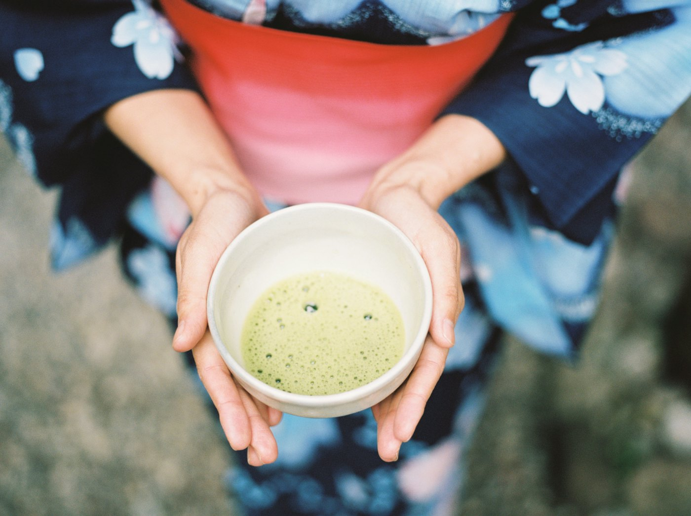
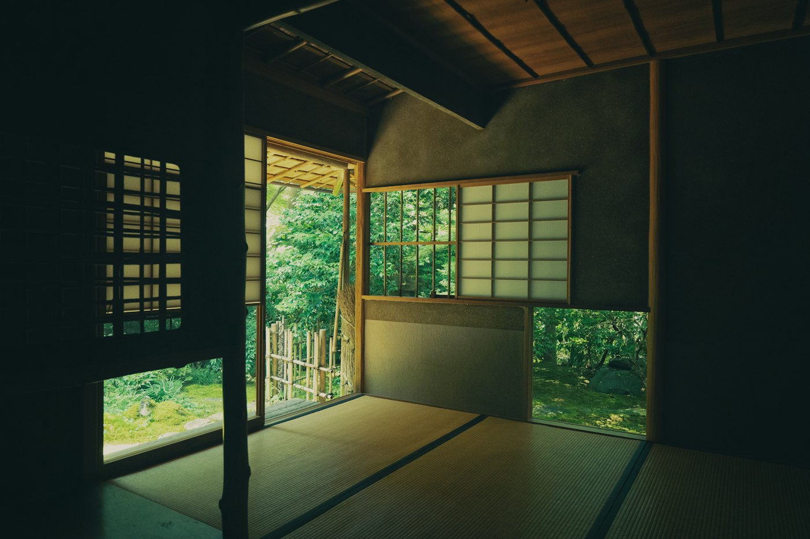
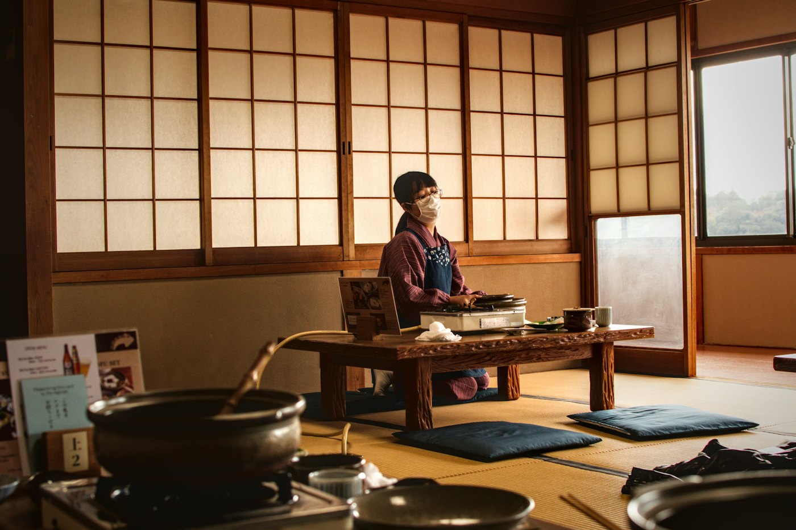
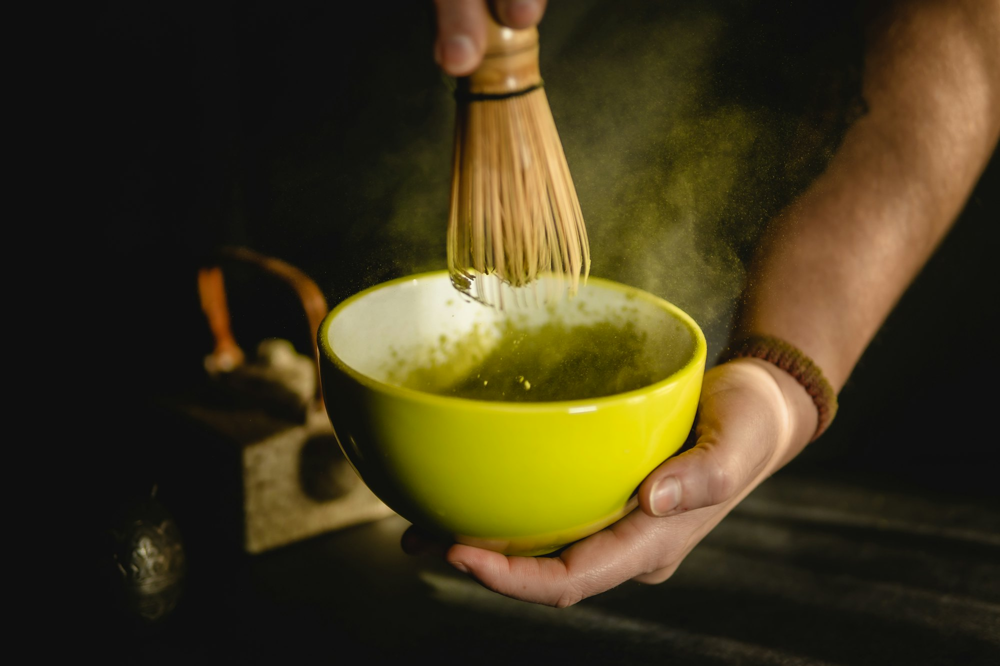
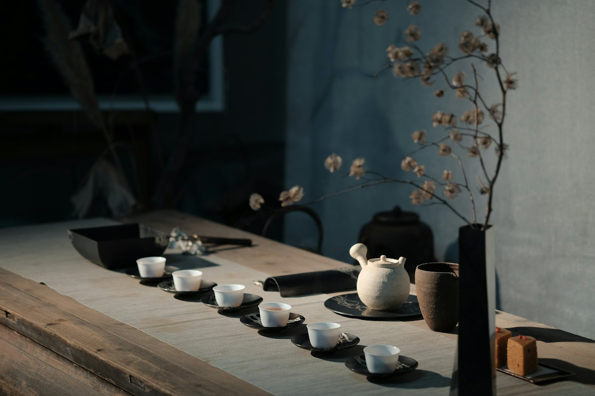

Una cerimonia solo per voi
Nella stanza del tè della scuola, a Lucca. Gesti essenziali, il borbottare dell'acqua, il verde del matcha, il gusto dei dolci. I buoni già acquistati valgono fino al 31 dicembre 2026.
Prenota un'esperienzaScuola Jaku, a Lucca. Corsi da tea sommelier, cerimonia giapponese e, dal 1° dicembre, le lezioni in video del Tea Club.
Tra chi offre il tè e chi lo riceve, tra gli oggetti scelti e la stagione fuori dalla finestra.
Per l'ospite, per la ciotola, per un gesto ripetuto mille volte e ogni volta da capo.
Ogni utensile si pulisce davanti all'ospite. Intanto si fa ordine anche dentro.
È l'ultima delle quattro parole del tè. Ed è il nome della scuola.
Scorri: la frusta la muovi tu.
Apre il 1° dicembre.
La scuola arriva a casa tua: un abbonamento mensile con le lezioni in video. Le guardi quando vuoi, dal telefono o dal computer, e ogni mese ne arrivano di nuove.
Tocca una lezione per vedere come la trova un socio. I video si aprono solo ai soci, in streaming. Non si scaricano.
La storia della bevanda e le grandi famiglie del tè.
Accenni storici, le categorieCome la foglia diventa tè, e come si estrae al meglio.
Tecniche di lavorazione, acqua, tempi e temperatureI paesi produttori e i loro modi di bere il tè.
Cina, Giappone, India, riti e usanzeStrumenti, preparazioni avanzate e servizio professionale.
Teiere e accessori, degustazione professionaleÈ la prima cosa che si impara al secondo livello: la stessa foglia, a dieci gradi di troppo, diventa amara. Scegli un tè, versa l'acqua e guarda la tazza.

Ogni incontro è unico e non si ripeterà.
È il principio che guida ogni cerimonia. Per questo ogni lezione, anche online, è preparata per chi la segue.

Nella stanza del tè della scuola, a Lucca. Gesti essenziali, il borbottare dell'acqua, il verde del matcha, il gusto dei dolci. I buoni già acquistati valgono fino al 31 dicembre 2026.
Prenota un'esperienza
Lezioni di cerimonia del tè giapponese con un'insegnante della scuola Omotesenke: la calma, l'ascolto di sé, la cura di ogni gesto.
Il braciere portatile lascia il posto al ro, il focolare incassato nel pavimento, e si apre la giara con il tè raccolto in primavera. Per chi pratica la cerimonia, l'anno comincia qui.

Hatsugama: la prima cerimonia dopo Capodanno, con gli auguri, i dolci della stagione e il tè preparato con un po' più di cura del solito.

Ottantotto notti dopo l'inizio della primavera arriva lo shincha: foglie giovani, profumo d'erba tagliata. Si beve subito, finché è fresco.
Con il caldo torna il furo, il braciere portatile, e si sposta lontano dagli ospiti. Le ciotole diventano basse e larghe, perché il tè si raffreddi prima.
Insegnante di cerimonia del tè della scuola Omotesenke e tea sommelier. La Scuola Jaku nasce a Lucca per insegnare la cerimonia; poi arrivano i corsi da tea sommelier, in presenza e online, con una convinzione: la Via del Tè può rendere migliore la vita di chi la pratica.
Il libro. L'arte della degustazione professionale, a cura di Silvia Battistini: dalla storia della bevanda alle tecniche di lavorazione e infusione, fino ai materiali e al servizio.

Un'esperienza nella stanza del tè, un corso, le lezioni del Tea Club. Scrivi il buono qui: lo vedi com'è prima di chiederlo.
Per le tue mattine lente.
Tea Sommelier Italia, Scuola di Cerimonia del Tè Jaku. Via Benedetto Cairoli 33, Lucca.